A trip to Nami Island.
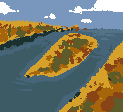1.
2.
Memories of the 2002 World Cup
the whole country was in festival mode, staying out late and roaming around, celebrating everywhere.
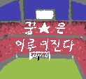3.
The golden age of StarCraft.
/3.png)
4.
Arcade machines in front of stationery shops, and the old lady selling dalgona in front of the school.
5.
Playing “Cops and Thieves” at the playground.
6.
The World Cup, Cyworld, and the sense of anticipation for the 21st century.
7.
Back when I was an only child, before I had two younger siblings,
I remember living with my parents in a shabby,
crumbling house in an alley in Ui-dong, where the insulation was barely held together with plastic.
We all slept tightly packed into a room about around 10–13㎡.
The bathroom was across the yard, so I hated going there in winter.
I was very timid and scared to go alone at night,
so my parents bought toy walkie-talkies and stayed in constant communication with me while I went to the bathroom.
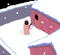8.
Using a flip phone.
9.
Unlike now, technology felt more distant from people back then.
I noticed birds in trees, telephone poles, passing cars, and people more.
Rather than looking at my phone, my eyes were drawn to everything else around me.
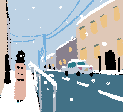10.
Hanging out around college town.
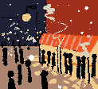11.
Going to Seoul Children’s Grand Park with my family to see the animals.
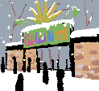12.
New mobile devices: Nokia.
Being amazed (and a little shocked) by computer screens.
Slow internet.
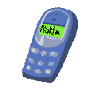13.
LEGO Ninjago.
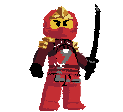14.
Pregnant with a child.
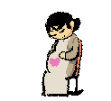15.
Starting a bakery and going through an extremely busy period of life…
the happiest moments were when my son was born,
and later, when my daughter was born.
16.
A memory of playing tag (Escape from Hell) at the playground.
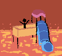17.
A memory of going to school on a Saturday,
eating a hamburger the class president bought us,
and heading home early while soaking up the warm sunlight.
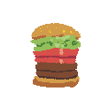


00:00